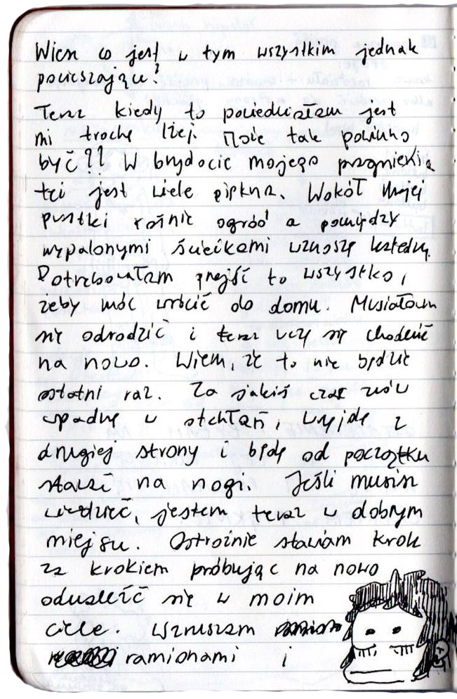
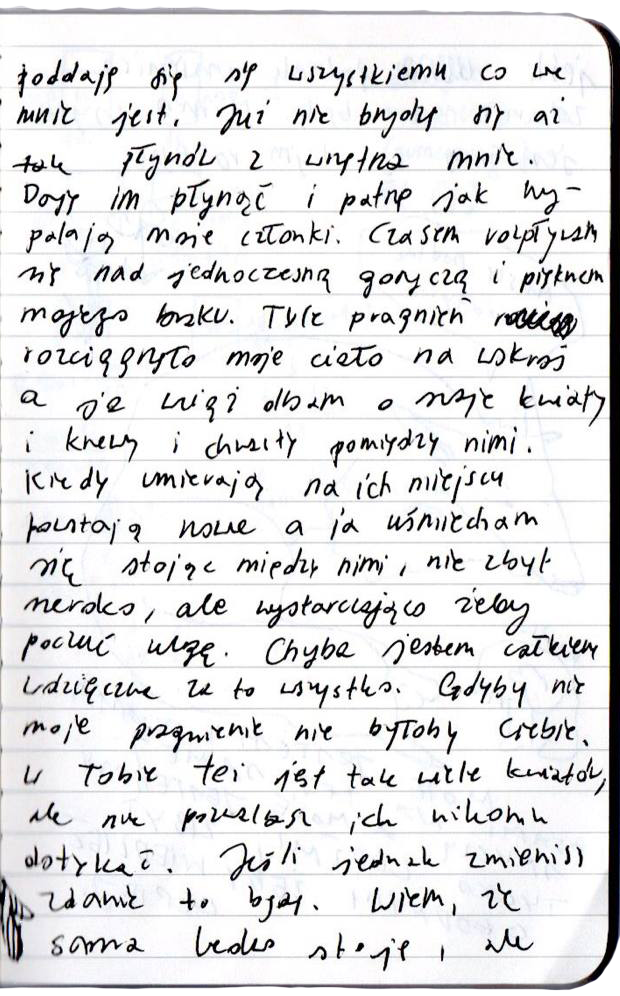
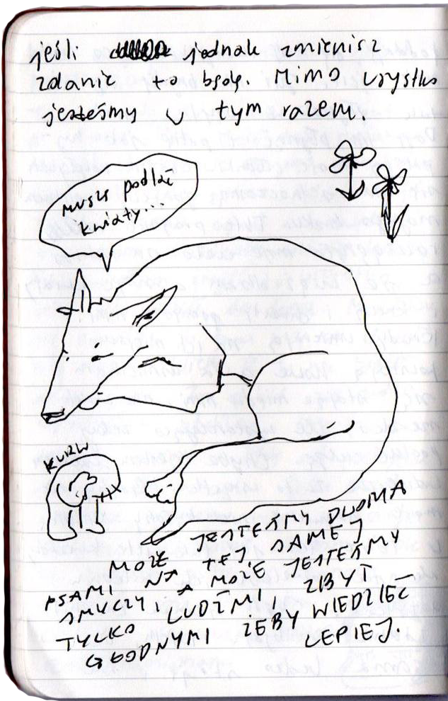

Wiesz co jest w tym wszystkim jednak pocieszające?
Teraz kiedy wypowiedziałam to wszystko jest mi lżej. Może tak powinno być. W brzydocie mojego pragnienia kryje się też wiele piękna. Wokół mojej pustki rośnie ogród a pomiędzy wypalonymi ścieżkami wznoszę katedrę. Potrzebowałam przejść to wszystko, żeby móc wrócić do domu. Musiałam się odrodzić i teraz uczę się chodzić na nowo. Wiem, że to nie będzie ostatni raz. Za jakiś czas znów wpadnę w swoją otchłań, wyjdę z drugiej strony i będę od początku wstawać na nogi. Jeśli musisz wiedzieć, jestem teraz w dobrym miejscu. Ostrożnie stawiam krok za krokiem próbując na nowo odnaleźć się w moim ciele. Wzruszam ramionami i poddaję się wszystkiemu co we mnie jest. Już nie brzydzę się aż tak płynów z wnętrza mnie. Daję im płynąć i patrzę jak wypalają moje członki. Czasem rozpływam się nad jednoczesną goryczą i pięknem mojego braku. Tyle pragnień rozciągnęło moje ciało na wskroś a ja wciąż dbam o swoje kwiaty i krzewy i chwasty pomiędzy nimi. Kiedy umierają na ich miejscu wzrastają nowe a ja uśmiecham się stojąc między nimi, nie zbyt szeroko, ale wystarczająco, żeby poczuć ulgę. Chyba jestem całkiem wdzięczna za to wszystko. Gdyby nie moje pragnienie nie byłoby Ciebie. W Tobie też jest tak wiele kwiatów, ale nie pozwalasz ich nikomu dotykać. Jeśli jednak zmienisz zdanie to będę. Wiem, że sama ledwo stoję, ale jeśli tylko chcesz to pomogę Ci wstać. Mimo wszystko jesteśmy w tym razem.